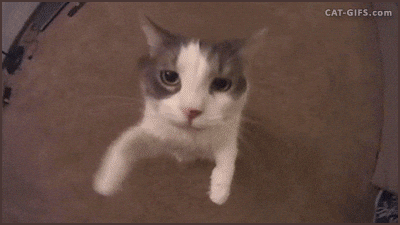

Penutup.

Mian nee kalau kalimatnyaa gak sebagus itu soalnya dibuat pas 29 Feb 2024, maaf kak de em pasti banyak salah ke nanay :(
Terimakaci banyak buat semuamuanyaaaa sayangnyaa aku cantiknyaa aku gemoynyaa aku manisnyaa aku imutnyaa aku lucunyaa aku bayik besarnyaa aku putrinyaa akuuuuuuu🤍🩵🩶❤️🖤
SN always stay and janjji❗